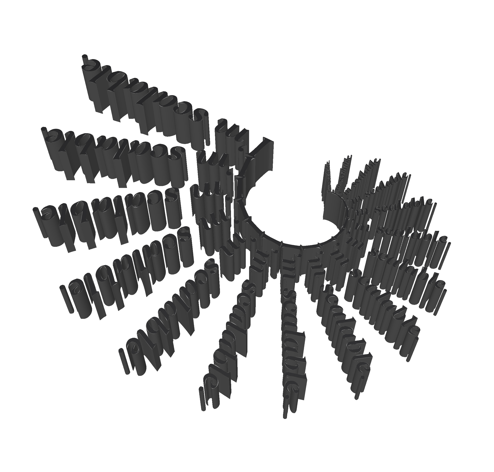
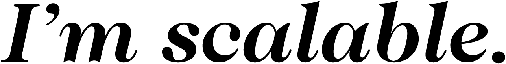

I’m scalable.svg is a 3D printed installation created by one single vector file in different sizes. Vector images can be used for 3D printing by simply extruding them and convert them into .stl files to be ready to print. Always seen as a type of graphical file, SVG files can be very useful when it comes to creative uses in 3D printing.

Essentially, vector images uses a special kind of polygons to make images in computer graphics. Each of the points in the polygons have a definite position on a coordinate. Thus, images created by this technology will not lose its quality when being enlarged.
This project aims to celebrate the underrated use of graphical vector file, by exploring one of its multiple potential uses.
You can also download the SVG file and 3D print it yourself by clicking the image below:
